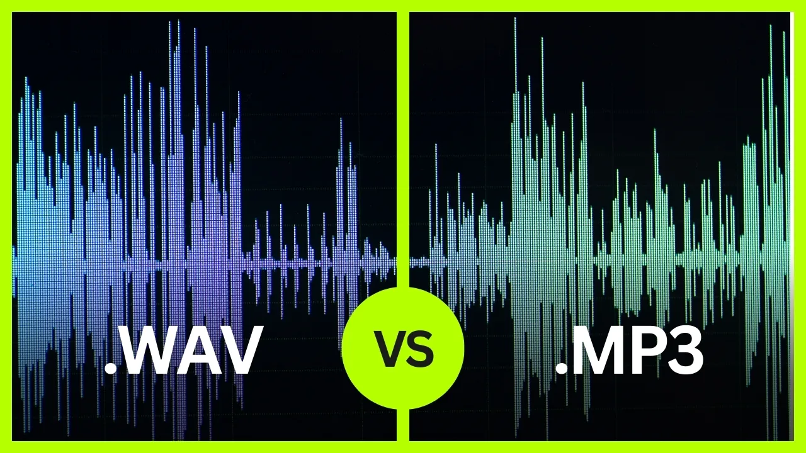

MP3格式介绍
/ MP3 Format Introduction
MPEG Audio Layer III
MPEG音频第三层
🎵
主要用途 / Primary Purpose
音乐和其他声音转换为MP3文件格式
Convert music and other sounds into MP3 file format
🔧
核心技术 / Core Technology
音频压缩技术 / Audio Compression
使用感知音频编码减少数据
⚠️ 有损格式 / Lossy Format
压缩算法执行后原始文件信息丢失
压缩效果 / Compression Results
文件大小减少约90% / Reduces file size by ~90%
Original
Compressed
✓
优势 / Advantages
文件小
，便于存储和传输 /
Small files, easy storage & transmission
广泛兼容性
/
Wide compatibility
音质与大小的平衡
/
Balance between quality and size
📉
技术实现 / Technical Implementation
文件压缩算法
/
File Compression Algorithms
感知音乐塑形
/
Perceptual Music Shaping
CD文件转换
/
CD File Conversion

WAV (原始) vs MP3 (压缩) 波形对比